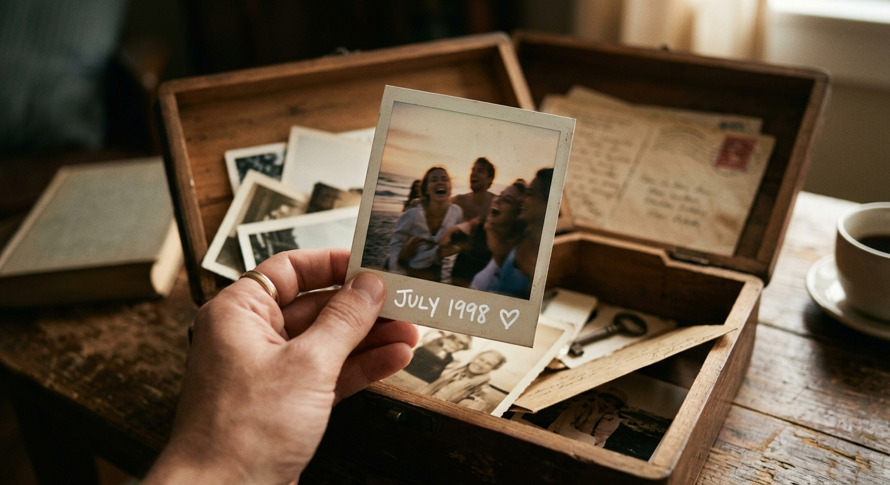

ภาพถ่าย จดหมาย และเรื่องเล่าคือสิ่งที่มีค่าที่สุดสำหรับหลายครอบครัว เราช่วยรวบรวม ถนอม และจัดเรียงให้เป็นผลงานที่คนรุ่นหลังเปิดดูและเข้าใจเรื่องราวได้ ไม่หายไปตามกาลเวลา

ดูภาพรวมก่อนเริ่ม เพื่อให้เห็นว่าเราจะดูแลอะไร และคุณได้อะไรในแต่ละขั้น
สแกนด้วยความละเอียดที่เหมาะกับการเก็บถาวรและการพิมพ์
ตามขอบเขตที่ตกลงกัน
พูดคุยและเรียบเรียงเป็นเรื่องราว
ให้ดูง่ายและเล่าเรื่องต่อเนื่อง
เลือกรูปแบบที่เหมาะกับการส่งต่อ
ให้ของจริงอยู่ได้นาน
ตกลงว่าจะเก็บอะไร และคัดชิ้นที่มีความหมาย
แปลงเป็นดิจิทัลและบันทึกเรื่องราว
ส่งร่างให้ครอบครัวตรวจก่อนจัดทำจริง
ส่งมอบเล่มหรือไฟล์พร้อมคำแนะนำการเก็บรักษา
ขึ้นกับสภาพต้นฉบับ เราประเมินและแจ้งให้ทราบก่อนเริ่ม
เต็มที่ เราให้ครอบครัวตรวจร่างก่อนทุกครั้ง
เลือกได้ทั้งเล่มหนังสือและไฟล์ดิจิทัล รายละเอียดแจ้งตอนเสนอขอบเขตงาน
เล่าสถานการณ์ให้เราฟังก่อนได้เลย เราจะช่วยเลือกขอบเขตที่เหมาะกับครอบครัว
นัดปรึกษาฟรี →